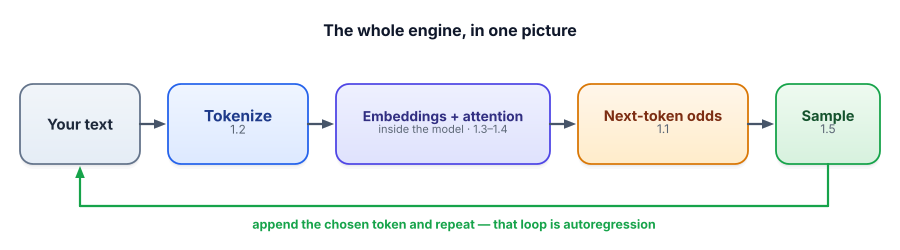

Interview check: How LLMs Work
Fundamentals are the most-tested area in applied-GenAI interviews, because they reveal whether you actually understand the tools or just use them. Here are the questions teams really ask, with strong answers and what each one is secretly probing.
For each question, answer out loud first — really say it — before opening the model answer. The gap between your answer and the model one is your study list. If you can give the strong answer in your own words, you’ve got the lesson. That’s the bar for the whole track.

The questions teams ask
“In one or two sentences, what does an LLM actually do?”
▸ Strong answer & what they’re testing
Answer: It predicts the next token given the tokens so far — outputting a probability distribution over its whole vocabulary — and generates text by repeatedly sampling a token and feeding it back in (autoregression). All its apparent knowledge is patterns learned by doing this over huge amounts of text.
Testing: Whether you have the correct core mental model, or think of it as a search engine / database. Leading with “next-token prediction” signals you understand the machine, not just the marketing.
“What’s a token, and why should I care about token counts?”
▸ Strong answer & what they’re testing
Answer: A token is a chunk of text — often a word-piece — from the model’s fixed vocabulary; text is split by a sub-word tokenizer (commonly byte-pair encoding). I care because tokens are the unit of cost (billing is per token), context limits (windows are measured in tokens), and latency. Rule of thumb: ~4 characters per token in English; code and many non-English languages cost more.
Testing: Practical fluency. Mentioning cost/context/latency shows you’ve actually shipped and budgeted, not just read a blog post.
“Why do LLMs struggle to count the letters in a word or do exact arithmetic?”
▸ Strong answer & what they’re testing
Answer: Because they see tokens, not individual characters or digits. A word like “strawberry” may be one or two sub-word tokens, so the letters aren’t directly available to count; similarly, multi-digit numbers get chopped into tokens, so step-by-step arithmetic isn’t native. The fix is to give it a tool (a calculator or code) or prompt it to work character-by-character.
Testing: Whether you can reason from first principles (tokenization) to a surprising behavior — and whether you know the engineering fix (tools), which previews Track 4.
“What’s an embedding, how do you compare two, and where would you use them?”
▸ Strong answer & what they’re testing
Answer: An embedding is a vector (hundreds–thousands of numbers) representing a text’s meaning, produced by an embedding model so that similar meanings get similar directions. You compare two with cosine similarity — the cosine of the angle between them, from +1 (similar) to −1 (opposite). Uses: semantic search, RAG retrieval, deduplication, clustering, recommendations. The superpower is matching meaning even when the words differ.
Testing: Core RAG readiness. They want “meaning as vectors + cosine + retrieval,” and bonus points for noting semantic vs. lexical matching.
“A user’s long chat starts forgetting earlier messages. What’s happening, and how do you fix it?”
▸ Strong answer & what they’re testing
Answer: The conversation exceeded the context window. Each turn the whole history is re-sent, but only what fits in the window is actually seen; older tokens get truncated. Fixes: summarize earlier turns into a compact running summary, retrieve only relevant past messages (RAG over the history), or use a model with a larger window — while remembering bigger windows cost more, are slower, and can suffer “lost in the middle.”
Testing: That you know chat “memory” is just re-sent text bounded by the window, and that you have real mitigation strategies, not just “use a bigger model.”
“Explain temperature and top-p. What settings would you use for data extraction vs. brainstorming?”
▸ Strong answer & what they’re testing
Answer: Temperature reshapes the probability distribution before sampling — low sharpens toward the top token (deterministic), high flattens it (varied). Top-p (nucleus) samples only from the smallest set of tokens whose probabilities sum to p, adapting to the model’s confidence. For extraction/classification/JSON I’d use temperature 0 (greedy) for consistency; for brainstorming I’d use ~0.8–1.0 with top-p ~0.9 for diversity.
Testing: Hands-on control. Knowing temperature 0 = determinism for structured tasks is a strong, practical signal.
“Why do LLMs hallucinate, and how do you reduce it in a product?”
▸ Strong answer & what they’re testing
Answer: Hallucination is inherent to the mechanism: the model generates the most plausible next tokens, not the most true ones, and it has no built-in way to know when it doesn’t know — so it produces confident, fluent guesses. Confidence is uncorrelated with correctness. To reduce it: ground the model in retrieved real data and instruct it to answer only from that (RAG), give it tools for facts/math, lower temperature for factual tasks, require and verify citations, validate outputs, and design the UX to show sources. You manage hallucination with architecture, not by asking the model to “be accurate.”
Testing: The single most important judgment call in the field. They want the mechanism and a layered mitigation strategy.
“How would you make a model answer questions about our internal docs, which it’s never seen?”
▸ Strong answer & what they’re testing
Answer: The model can’t know anything past its training cutoff or any private data, so I wouldn’t rely on its memory — I’d supply the information. Concretely: embed the internal docs and store the vectors; at query time, embed the question, retrieve the most similar chunks, and put them in the prompt with an instruction to answer only from them and cite sources. That’s retrieval-augmented generation. Fine-tuning is a different tool (for style/format/skills), not the first choice for fresh factual knowledge.
Testing: Whether you connect a limitation (cutoff/private data) to the right architecture (RAG) — and don’t reach for fine-tuning by reflex. This is a very common opening to a system-design round.
“What’s the difference between a base model and a chat/instruct model?”
▸ Strong answer & what they’re testing
Answer: A base model is the raw next-token predictor from pre-training; give it a question and it may just continue the text (e.g., add more questions). An instruct/chat model is a base model further trained on instruction–response examples and shaped with human preferences, so it reliably follows directions and behaves like an assistant. Same engine, additional training to make it helpful. (Details in Track 5.)
Testing: That you understand assistants aren’t a different species — they’re base models with extra alignment training.
“Give an example of a task you would not hand to an LLM, and why.”
▸ Strong answer & what they’re testing
Answer: Anything where a confident wrong answer is costly and the truth isn’t in the prompt — e.g., “compute this customer’s exact refund from our billing rules” or “is this specific drug interaction safe?” The model may produce a fluent, wrong answer with no signal of uncertainty. I’d either ground it in authoritative data and verify, route the exact computation to deterministic code/tools, or keep a human in the loop. The skill is matching the tool to the risk.
Testing: Maturity. Strong candidates know when not to use an LLM, or how to constrain it — that judgment is what separates a builder from a hype-follower.
Rapid-fire self-check
Which statement is the most accurate one-line description of an LLM?
An interviewer asks why you’d pick RAG over fine-tuning to answer questions about a company’s constantly-updated docs. Best reason?
You ask the same question three times at temperature 0.8 and get three different answers. What single change makes it deterministic?
Why can a language model state a confident, fluent fact that is simply false?
- Next-token prediction & autoregression — in one breath.
- Tokens: what they are, the ~4-chars rule, and why letter-counting fails.
- Embeddings + cosine similarity, and why they power search/RAG.
- Context window: the shared budget, truncation, “lost in the middle.”
- Temperature & top-p, and the settings for extraction vs. brainstorming.
- Hallucination: the mechanism, confidence ≠ correctness, and the layered fixes.
- Knowledge cutoff → supply private/fresh data via RAG, not memory.
If you can explain that list to a friend, you’ve genuinely completed Track 1 — not “read” it, completed it. You now understand the engine better than most people who use it daily. Next, we learn to drive it: Track 2, Prompt Engineering.